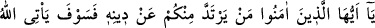
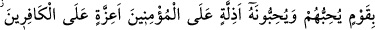
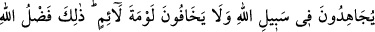
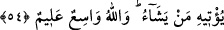

böyle geçmektedir.
Bunlardan sonra şunu bil ki insan vücûdundaki nefis, şeytan ve şer kuvvetler yahûdî
ve hristiyanlar gibidir. Allah Teâlâ onlara düşman olduğu ve onlara düşman olmayı
emrettiği için onlardan uzak durmak ve dost olmamak gerekir. Aynı şekilde nefis ve
diğerlerinin dostluğu ve hevâlarına uymak da câiz değildir. Çünkü bu, insanı cehennem
ateşine ve ayrılık ateşine sürükler. Mü’min, mutlak olarak Allah Teâlâ’ya düşman
olanlara düşman olmakla memurdur. Aksi takdirde îmanı sahih olmaz.
Mesnevî’de şöyle geçmektedir:
Firavun’da olan yok mu? O, sende de var.
Fakat senin ejderhan kuyuya hapsedilmiş
Lanetli nefis seni ne de harap etmiş
Bu arkadaşın da seni hikâyelerle uzaklara atmakta
Senin ateşine, Firavun’un ateşine atılan odun atılmamakta
Fırsatını bulsan, senin ateşin de onunki gibi yalımlanır
Yani, Firavun’u tanrılık iddiâsı ve hevâsı, söylediği şeyleri söylemeye ve yaptığı
şeyleri yapmaya itmiştir. Halbuki senin için böyle sebebler yok. Bu konuda arzu ve
isteklerin de sana destek olmaz. Öyleyse Firavun’un yaptığını yapma.
54. Ey îman edenler! Sizden kim dîninden dönerse (bilsin ki) O, öyle bir kavim
getirir ki Allah onları sever ve onlar da O’nu severler. Mü’minlere karşı alçak
gönüllü, kâfirlere karşı ise çok çetindirler. (Onlar) Allah yolunda cihad ederler ve
hiçbir kınayanın kınamasından korkmazlar. Bu, Allah’ın dilediğine verdiği lütfudur.
Allah(‘ın lütfu ve fazlı) geniştir, her şeyi bilendir.
“Ey îman edenler! Sizden kim dîninden dönerse” Bu konu, Kur’ân’ın meydana
gelmeden önce olacağını haber verdiği hâdiselerdendir. Rivayet edildiğine göre on bir
fırka İslâm’dan irtidad etmiştir. Bunlardan üçü Rasûlullah (s.a.) zamanında olmuştur.
Birincisi reisleri Zü’l-hımar lakaplı Esved el-Ansî olan Müdlicoğullarıdır. Esved,
kâhindi. Yemen’de peygamberliğini îlan etti. Memleketini ele geçirip Muaz b. Cebel
gibi Rasûlullah (s.a.)’in valilerini ve Yemen’in ileri gelenlerini kovdu. Rasûlullah
(a.s.), Muaz b. Cebel ve beraberindeki diğer müslümanlara bir mektup yazdı ve